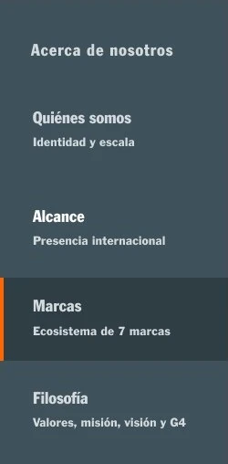
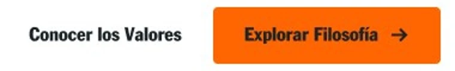
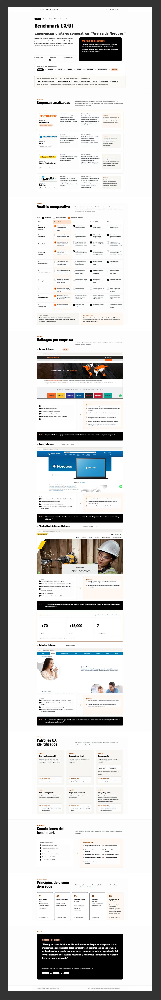
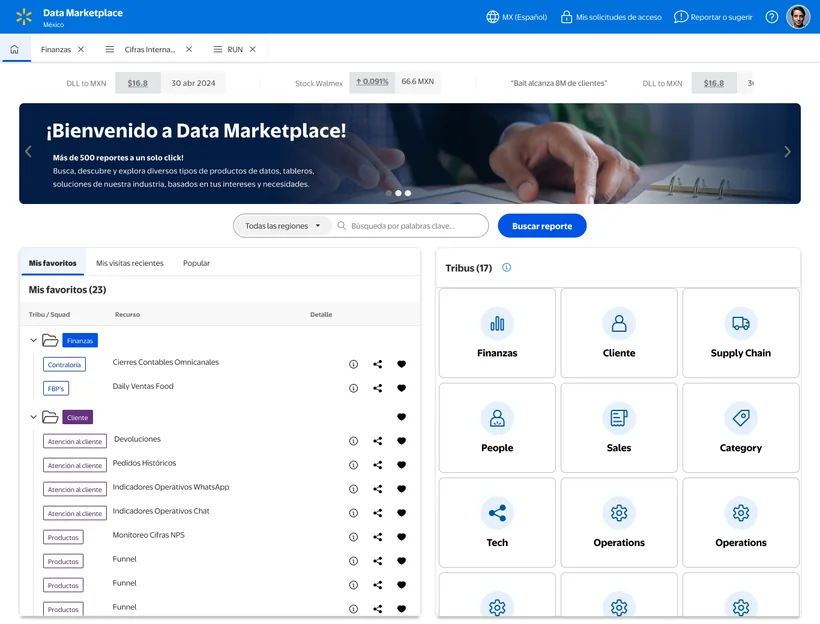
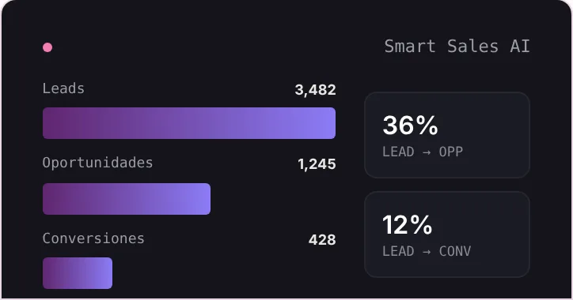

Propuesta conceptual UX/UI · Experiencia institucionalUX/UI concept proposal · Corporate experience
Truper — Corporate Experience Redesign
Replanteando la organización y exploración de la información institucional de Grupo Truper.
Rethinking how Grupo Truper’s corporate information is organized and explored.
Propuesta conceptual de rediseño de la sección «Acerca de Nosotros», desarrollada mediante investigación UX, análisis comparativo, arquitectura de información y diseño de interacciones. Explora una alternativa para organizar información corporativa compleja mediante navegación contextual y contenido progresivo.
A concept redesign of the “About us” section, built through UX research, comparative analysis, information architecture and interaction design. It explores an alternative way to organize complex corporate information through contextual navigation and progressive content.
Explorar prototipo en Figma ↗Explore the Figma prototype ↗
Recorrido del prototipo en Figma · Quiénes somos, Alcance y Marcas · fotografía ilustrativa y algunos textos de maquetaFigma prototype walkthrough · Who we are, Reach and Brands · illustrative photography and some placeholder copy
El proceso en cifrasThe process in numbers
4
Referentes analizados: Truper, Urrea, Stanley Black & Decker y Rotoplas
References analyzed: Truper, Urrea, Stanley Black & Decker and Rotoplas
10
Criterios heurísticos en una matriz comparativa cualitativa
Heuristic criteria in a qualitative comparison matrix
7 → 4
Bloques secuenciales reorganizados en cuatro categorías
Sequential blocks reorganized into four categories
Proyecto conceptual desarrollado como ejercicio técnico independiente. No representa una implementación oficial de Grupo Truper.
Concept project developed as an independent technical exercise. It does not represent an official Grupo Truper implementation.
Una propuesta para reorganizar la experiencia institucional de Truper.
A proposal to reorganize Truper’s corporate experience.
El proyecto parte del análisis de la sección «Acerca de Nosotros» de Grupo Truper, con el propósito de explorar alternativas que faciliten la organización, jerarquización y descubrimiento de su información institucional.
The project starts from an analysis of Grupo Truper’s “About us” section, with the aim of exploring alternatives that make its corporate information easier to organize, prioritize and discover.
Rediseñar «Acerca de Nosotros»
Redesign “About us”
Experiencia institucional de Truper en desktop.
Truper’s corporate experience on desktop.
No Scrolling
Sin desplazamiento vertical en la pantalla principal.
No vertical scrolling on the main screen.
Conservar el contenido
Keep the content
Mantener la información, su claridad y la identidad de marca.
Keep the information, its clarity and the brand identity.
La restricción de no usar scroll venía del brief. No la trato como una regla general de UX: el scroll no es un problema en sí mismo. Lo interesante era cumplirla sin sacrificar contenido.
The no-scroll constraint came from the brief. I don’t treat it as a general UX rule: scrolling isn’t a problem in itself. The interesting part was meeting it without sacrificing content.
PREGUNTA DE DISEÑODESIGN QUESTION
¿Cómo podemos facilitar la exploración de información corporativa compleja dentro de una experiencia que no depende del scroll vertical?
How might we make complex corporate information easier to explore within an experience that doesn’t rely on vertical scrolling?
Antes de proponer una solución, necesitaba entender qué pasaba con la página actual.
Before proposing a solution, I needed to understand what was happening on the current page.
Truper tenía información valiosa. La oportunidad estaba en cómo descubrirla.
Truper had valuable information. The opportunity was in how people discovered it.
Revisé la página completa con una evaluación heurística. El contenido era sólido: cifras de escala, siete marcas, valores y un modelo de negocio propio.
I reviewed the full page through a heuristic evaluation. The content was solid: scale figures, seven brands, values and its own business model.
Observación heurísticaHeuristic observation
- Jerarquía de información+70 países tiene peso de titular en el hero, pero +15,000 productos y el Centro de Calidad Avanzada (CCAT) quedan dentro de un párrafo.
- Information hierarchy“70+ countries” gets headline weight in the hero, but “15,000+ products” and the Advanced Quality Center (CCAT) sit inside a paragraph.
- Presentación de marcasLas siete marcas comparten una fila con el mismo peso visual; su especialidad y año aparecen en texto pequeño y no hay acceso directo a cada una.
- Brand presentationThe seven brands share one row with the same visual weight; their specialty and year appear in small text, with no direct access to each one.
- Descubrimiento del contenidoEl Modelo G4, un diferenciador de la filosofía corporativa, aparece al final del recorrido vertical.
- Content discoveryThe G4 Model, a differentiator of the corporate philosophy, appears at the end of the vertical journey.
El problema no era la ausencia de información, sino su organización, jerarquización y descubrimiento.
The problem wasn’t a lack of information, but how it was organized, prioritized and discovered.
Son observaciones de una evaluación heurística, no resultados de pruebas con usuarios.
These are observations from a heuristic review, not results from user testing.
Para entender cómo resolver esto, revisé cómo lo hacían otras empresas.
To understand how to solve this, I looked at how other companies handled it.
Antes de diseñar, investigué cómo otras empresas organizaban su información institucional.
Before designing, I researched how other companies organized their corporate information.
Busqué patrones de arquitectura, jerarquía visual, navegación contextual, presentación de cifras y descubrimiento de contenidos.
I looked for patterns in architecture, visual hierarchy, contextual navigation, how figures are presented and how content is discovered.
InvestigaciónResearch
Tres preguntas guiaron el análisis
Three questions guided the analysis
- ¿Cómo presentan información corporativa compleja?
- How do they present complex corporate information?
- ¿Cómo facilitan encontrar contenidos específicos?
- How do they make specific content easy to find?
- ¿Qué patrones podrían adaptarse a la experiencia de Truper?
- Which patterns could adapt to Truper’s experience?
El benchmark siguió ocho pasos. Cada uno produjo un entregable que alimentaba al siguiente:
The benchmark followed eight steps. Each one produced a deliverable that fed the next:
- ContextoContext
- ReferentesReferences
- 10 criterios10 criteria
- HallazgosFindings
- 6 patrones6 patterns
- 9 oportunidades9 opportunities
- 5 principios5 principles
- HipótesisHypothesis
Cuatro referentes, cuatro perspectivas
Four references, four perspectives
Grupo Truper
Por qué: Identificar oportunidades en la experiencia actual.
Why: Identify opportunities in the current experience.
Aprendizaje: Punto de partida para comparar.
Learning: Starting point for comparison.
Urrea
Por qué: Organización institucional, trayectoria y recursos visuales.
Why: Corporate organization, history and visual resources.
Aprendizaje: Comunicar presencia e historia visualmente.
Learning: Communicate presence and history visually.
Stanley Black & Decker
Por qué: Jerarquía de cifras, estructura corporativa y navegación contextual.
Why: Figure hierarchy, corporate structure and contextual navigation.
Aprendizaje: Priorizar cifras y facilitar la exploración.
Learning: Prioritize figures and make exploring easier.
Rotoplas
Por qué: Categorización temática y storytelling institucional.
Why: Thematic categorization and corporate storytelling.
Aprendizaje: Organizar la información por categorías.
Learning: Organize information by category.
La matriz de diez criterios
The ten-criteria matrix
Evalué a las cuatro empresas con una escala cualitativa de tres niveles. Descarté puntuar del 1 al 10: una revisión heurística no tiene esa precisión.
I evaluated all four companies with a three-level qualitative scale. I ruled out 1-to-10 scores: a heuristic review doesn’t have that precision.
| CriterioCriterion | Truper | Urrea | Stanley B&D | Rotoplas |
|---|---|---|---|---|
| 01 · Arquitectura de informaciónInformation architecture | ✕ | ✓ | ✓ | ~ |
| 02 · Jerarquía visualVisual hierarchy | ~ | ~ | ✓ | ✓ |
| 03 · EscaneabilidadScannability | ✕ | ~ | ✓ | ~ |
| 04 · Navegación entre contenidosNavigation between content | ✕ | ✓ | ✓ | ~ |
| 05 · Storytelling corporativoCorporate storytelling | ~ | ~ | ✓ | ✓ |
| 06 · Presentación de datos y cifrasData and figures | ~ | ~ | ✓ | ~ |
| 07 · Recursos gráficosVisual resources | ~ | ~ | ✓ | ✓ |
| 08 · InteracciónInteraction | ✕ | ~ | ~ | ~ |
| 09 · Dependencia del scrollScroll dependency | ✕ | ~ | ~ | ~ |
| 10 · Acceso a contenido específicoAccess to specific content | ✕ | ✓ | ✓ | ~ |
Las filas resaltadas concentran las oportunidades de Truper: organización y acceso al contenido, no calidad del contenido. Los referentes analizados usan recorridos verticales, lo que abrió la oportunidad de explorar otra arquitectura.
The highlighted rows concentrate Truper’s opportunities: organization and access to content, not content quality. The references analyzed use vertical journeys, which opened the opportunity to explore a different architecture.
Análisis cualitativo y heurístico; no son resultados cuantitativos ni de pruebas de usabilidad.
Qualitative, heuristic analysis; not quantitative or usability-test results.
Con la evidencia de los referentes, el siguiente paso era entender qué podía aplicar a Truper.
With the evidence from the references, the next step was understanding what could apply to Truper.
Los referentes no definieron la solución. Me ayudaron a identificar oportunidades.
The references didn’t define the solution. They helped me spot opportunities.
Al cruzar los hallazgos de las cuatro empresas aparecieron seis patrones que se repetían. Cada uno se tradujo en una oportunidad concreta para Truper.
Cross-checking findings from the four companies revealed six recurring patterns. Each one became a concrete opportunity for Truper.
SíntesisSynthesis
Información escaneable
Scannable information
Patrón observado: Entender la escala sin leer bloques de texto.
Observed pattern: Understanding scale without reading blocks of text.
Oportunidad para Truper: Cifras corporativas como elementos visuales destacados.
Opportunity for Truper: Corporate figures as highlighted visual elements.
Navegación no lineal
Non-linear navigation
Patrón observado: El contenido no exige un orden predeterminado.
Observed pattern: Content doesn’t require a predefined order.
Oportunidad para Truper: Que la persona elija directamente qué conocer.
Opportunity for Truper: Let people choose directly what to explore.
Categorización
Categorization
Patrón observado: Agrupar lo relacionado reduce el esfuerzo de búsqueda.
Observed pattern: Grouping related content reduces search effort.
Oportunidad para Truper: Organizar la información en categorías claras.
Opportunity for Truper: Organize information into clear categories.
Datos sobre párrafos
Data over paragraphs
Patrón observado: Los datos comunican más cuando se presentan visualmente.
Observed pattern: Data communicates more when presented visually.
Oportunidad para Truper: Priorizar cifras, mapas e indicadores sobre texto.
Opportunity for Truper: Prioritize figures, maps and indicators over text.
Revelación progresiva
Progressive disclosure
Patrón observado: No toda la información debe aparecer a la vez.
Observed pattern: Not all information needs to appear at once.
Oportunidad para Truper: Mostrar lo esencial primero y el detalle bajo demanda.
Opportunity for Truper: Show essentials first and detail on demand.
Storytelling visual
Visual storytelling
Patrón observado: Fotografía, cifras e iconografía comunican identidad.
Observed pattern: Photography, figures and iconography communicate identity.
Oportunidad para Truper: Una experiencia visual, no solo informativa.
Opportunity for Truper: A visual experience, not just an informative one.
Las nueve oportunidades de diseño documentadas en el benchmarkThe nine design opportunities documented in the benchmark
- 01
- Reducir dependencia del scroll verticalReduce reliance on vertical scrolling
- 02
- Mejorar la escaneabilidadImprove scannability
- 03
- Crear acceso directo a categoríasCreate direct access to categories
- 04
- Transformar datos en elementos visualesTurn data into visual elements
- 05
- Utilizar revelación progresivaUse progressive disclosure
- 06
- Permitir navegación no linealAllow non-linear navigation
- 07
- Mejorar el storytelling corporativoImprove corporate storytelling
- 08
- Priorizar contenido según relevanciaPrioritize content by relevance
- 09
- Diseñar una arquitectura escalableDesign a scalable architecture
Estos hallazgos me ayudaron a definir los criterios que guiarían las decisiones de diseño.
These findings helped me define the criteria that would guide design decisions.
Transformé los hallazgos en criterios para tomar decisiones de diseño.
I turned the findings into criteria for making design decisions.
Los principios no eran teoría decorativa: me ayudaron a descartar ideas que se veían bien pero agregaban scroll o mostraban todo a la vez.
The principles weren’t decorative theory: they helped me rule out ideas that looked good but added scrolling or showed everything at once.
DecisiónDecision
Visión general primero
Overview first
Lo esencial antes de profundizar.
Essentials before going deeper.
Navegación no lineal
Non-linear navigation
La persona elige qué explorar.
People choose what to explore.
Storytelling con datos
Storytelling with data
Cifras, marcas y alcance al centro.
Figures, brands and reach at the center.
Revelación progresiva
Progressive disclosure
Información contextual sin saturar.
Contextual information without clutter.
Un solo viewport
One viewport
Navegación y contenido sin scroll vertical.
Navigation and content without vertical scrolling.
P05 no viene de la investigación: es la restricción del brief convertida en principio.
P05 doesn’t come from the research: it’s the brief’s constraint turned into a principle.
HIPÓTESIS DE DISEÑODESIGN HYPOTHESIS
«Si organizamos la información en categorías claras, priorizamos los datos corporativos y permitimos una exploración no lineal, las personas podrían encontrar lo relevante sin depender del scroll vertical.»
“If we organize the information into clear categories, prioritize corporate data and allow non-linear exploration, people could find what matters without relying on vertical scrolling.”
Hipótesis pendiente de validación con usuarios.
Hypothesis pending validation with users.
Cada decisión responde a un hallazgo
Every decision traces back to a finding
Hallazgo → insight → principio → decisión UX. El índice de Marcas responde a dos insights: se escanea sin hacer clic y permite elegir cualquier marca en cualquier orden.
Finding → insight → principle → UX decision. The Brands index responds to two insights: it can be scanned without clicking, and any brand can be chosen in any order.
01 · Cifras poco visiblesLow-visibility figures
- HallazgoFinding
- +15,000 productos y el CCAT en un párrafo.15,000+ products and the CCAT in a paragraph.
- Insight
- 04 · Datos sobre párrafos04 · Data over paragraphs
- PrincipioPrinciple
- P03 · Storytelling con datosP03 · Storytelling with data
- Decisión UXUX decision
- Fast Facts en Quiénes somosFast Facts in Who we are
02 · Siete marcas con jerarquía similarSeven brands with similar hierarchy · ejemplo destacadofeatured example
- HallazgoFinding
- Una fila de igual peso, sin acceso directo.One equal-weight row, no direct access.
- Insight
- 01 · Información escaneable y 02 · Navegación no lineal01 · Scannable information and 02 · Non-linear navigation
- PrincipioPrinciple
- P02 · Navegación no linealP02 · Non-linear navigation
- Decisión UXUX decision
- Índice informativo de marcas con panel contextualInformative brand index with contextual panel
03 · CCAT dentro de un párrafoCCAT inside a paragraph
- HallazgoFinding
- Valioso, pero secundario frente a la escala.Valuable, but secondary to scale.
- Insight
- 05 · Revelación progresiva05 · Progressive disclosure
- PrincipioPrinciple
- P04 · Revelación progresivaP04 · Progressive disclosure
- Decisión UXUX decision
- Acordeón contextualContextual accordion
04 · Contenido secuencialSequential content
- HallazgoFinding
- Distinta naturaleza en un recorrido; G4 al fondo.Mixed content in one journey; G4 at the end.
- Insight
- 03 · Categorización03 · Categorization
- PrincipioPrinciple
- P02 · Navegación no linealP02 · Non-linear navigation
- Decisión UXUX decision
- Cuatro categorías con navegación persistenteFour categories with persistent navigation
Con los criterios definidos, el siguiente paso fue decidir cómo organizar la información.
With the criteria defined, the next step was deciding how to organize the information.
De siete bloques secuenciales a cuatro categorías de exploración.
From seven sequential blocks to four categories to explore.
Cada bloque original encontró su lugar en una de cuatro categorías. Los números indican de qué bloque viene cada contenido.
Each original block found its place in one of four categories. The numbers show which block each piece of content comes from.
DecisiónDecision
- Hero y presencia internacionalHero and international presence
- Descripción corporativaCorporate description
- MarcasBrands
- Marcas privadasPrivate brands
- ValoresValues
- Misión y VisiónMission and Vision
- Modelo G4G4 Model
- 01 · Quiénes somos01 · Who we areIdentidad y escalaIdentity and scale · desde 2from 2
- 02 · Alcance02 · ReachPresencia internacionalInternational presence · desde 1 y 4from 1 and 4
- 03 · Marcas03 · BrandsEcosistema de siete marcasSeven-brand ecosystem · desde 3from 3
- 04 · Filosofía04 · PhilosophyValores, Misión y Visión, Modelo G4Values, Mission and Vision, G4 Model · desde 5, 6 y 7from 5, 6 and 7ValoresValuesMisión y VisiónMission and VisionModelo G4G4 Model
Por qué esta organización
Why this organization
- Agrupar contenidos relacionados.
- Group related content.
- Permitir acceso directo mediante navegación contextual persistente.
- Allow direct access through persistent contextual navigation.
- Presentar el contenido de forma progresiva y conservar la orientación dentro del viewport.
- Present content progressively and keep orientation within the viewport.
Acerca de Nosotros, Productos, Soporte y Contacto. Lleva a otras secciones del sitio.
About us, Products, Support and Contact. It leads to other sections of the site.
Índice lateral con las cuatro categorías de Acerca de Nosotros.
Side index with the four About us categories.
No intenté mostrar todo el contenido al mismo tiempo. Todas las categorías están visibles; cada una presenta su contenido dentro del mismo viewport al seleccionarla.
I didn’t try to show all the content at once. Every category is visible; each one presents its content within the same viewport when selected.
Con la arquitectura definida, exploré cómo funcionaría antes de trabajar la identidad visual.
With the architecture defined, I explored how it would work before working on the visual identity.
Primero definí cómo debía funcionar. Después, cómo debía verse.
First I defined how it should work. Then, how it should look.
En wireframes evalué la estructura y la navegación antes de invertir tiempo en lo visual. Cada pantalla respondía a la misma pregunta: ¿la persona entiende dónde está, elige qué conocer y encuentra lo que necesita sin una página extensa?
In wireframes I evaluated structure and navigation before investing time in visuals. Every screen answered the same question: does the person understand where they are, choose what to explore and find what they need without a long page?
DiseñoDesign
Navegación persistente
Persistent navigation
Cuatro categorías para acceder directamente al contenido.
Four categories for direct access to content.
Indicador de posición
Position indicator
Un contador 01/04 comunica dónde está la persona sin depender de la barra de scroll.
A 01/04 counter shows where the person is without relying on a scrollbar.
Jerarquía corporativa
Corporate hierarchy
Tarjetas Fast Facts para destacar las cifras desde la estructura.
Fast Facts cards to highlight figures from the structure up.
En esta etapa exploré; no asumí que la solución estaba validada.
At this stage I was exploring; I didn’t assume the solution was validated.
Con la estructura clara, llevé cada vista a alta fidelidad.
With the structure clear, I took each view to high fidelity.
Una experiencia modular para descubrir la información institucional.
A modular experience to discover the corporate information.
Cuatro vistas dentro del mismo marco. En cada una, lo esencial queda visible y el detalle aparece cuando la persona lo pide.
Four views within the same frame. In each one, essentials stay visible and detail appears when the person asks for it.
Vista general de la propuesta
Proposal overview
Las cuatro categorías del prototipo, cada una dentro del mismo viewport.
The prototype’s four categories, each within the same viewport.
01 · Quiénes somos
01 · Who we are
- ProblemaProblem
- Las cifras corporativas tenían distintos niveles de visibilidad y el CCAT quedaba dentro de un párrafo.Corporate figures had different levels of visibility and the CCAT sat inside a paragraph.
- DecisionesDecisions
- Fast Facts para +70 países, +15,000 productos y 7 marcas.
- Fast Facts for 70+ countries, 15,000+ products and 7 brands.
- Acordeón contextual para el CCAT y sus +250,000 pruebas al año.
- Contextual accordion for the CCAT and its 250,000+ tests a year.
- Fotografía de manufactura, distribución y laboratorio.
- Manufacturing, distribution and lab photography.
El CCAT es valioso, pero secundario frente a la escala; abierto por defecto ya no cabía en el viewport. Lo esencial queda visible y el detalle aparece bajo demanda.
The CCAT is valuable but secondary to scale; open by default, it no longer fit the viewport. Essentials stay visible and detail appears on demand.
02 · Alcance
02 · Reach
- ProblemaProblem
- La presencia internacional estaba distribuida en el recorrido original.International presence was spread across the original journey.
- DecisionesDecisions
- +70 países como cifra protagonista.
- 70+ countries as the lead figure.
- Mapamundi conceptual con el origen en México.
- Conceptual world map with Mexico as origin.
- Tres diferenciadores numerados en lugar de un párrafo.
- Three numbered differentiators instead of a paragraph.
El mapa es conceptual: la leyenda indica que no representa ubicaciones específicas, porque no tenía la lista validada. El sitio de Truper ya publica los países de exportación; esa fuente oficial podría alimentarlo en una siguiente fase.
The map is conceptual: its legend states that it doesn’t show specific locations, because I didn’t have a validated list. Truper’s site already publishes its export countries; that official source could feed it in a later phase.
03 · Marcas
03 · Brands
- Siete tarjetas similares
- Seven similar cards
- Índice con nombre, especialidad y año
- Index with name, specialty and year
- Índice + panel contextual
- Index + contextual panel
- ProblemaProblem
- Las siete tarjetas iniciales no comunicaban la especialidad ni el contexto de cada marca antes de seleccionarla.The initial seven cards didn’t communicate each brand’s specialty or context before selecting it.
- DecisionesDecisions
- Índice de siete marcas con especialidad y año.
- Seven-brand index with specialty and year.
- Estado inicial con la trayectoria del grupo desde 1974.
- Initial state with the group’s history since 1974.
- Panel contextual con estado activo y acción para volver al inicio.
- Contextual panel with active state and a way back to the start.
No cambié solo la presentación visual: replanteé cómo se descubre cada marca.
I didn’t just change the visual presentation: I rethought how each brand is discovered.
Fue un refinamiento al revisar el diseño, no el resultado de una prueba con usuarios. Algunos textos de las capturas son de maqueta (años y especialidades de ciertas marcas) y están pendientes de corrección en el prototipo.
It was a refinement from reviewing the design, not the result of a user test. Some copy in the screenshots is placeholder (years and specialties of certain brands) and is pending correction in the prototype.
04 · Filosofía
04 · Philosophy
- ProblemaProblem
- Separadas, Misión y Visión generaban dos vistas con poco contenido dentro de un viewport fijo.Kept apart, Mission and Vision produced two sparse views within a fixed viewport.
- DecisionesDecisions
- De cuatro subpestañas a tres: Misión y Visión se agrupan por ser complementarias.
- From four sub-tabs to three: Mission and Vision are grouped because they complement each other.
- Valores numerados para escanear.
- Numbered values for scanning.
- Misión y Visión con tratamiento editorial; Modelo G4 con fotografía y contexto.
- Mission and Vision with editorial treatment; G4 Model with photography and context.
Las fotografías del prototipo son ilustrativas; en una versión final se sustituirían por fotografía oficial de Truper.
Prototype photography is illustrative; a final version would replace it with official Truper photography.
El contenido cambia. La orientación permanece.
Content changes. Orientation stays.
Sin scroll, cambiar de página o mover la estructura haría más difícil orientarse. Por eso solo cambia el panel; el resto permanece fijo.
Without scrolling, changing pages or moving the structure would make orientation harder. That’s why only the panel changes; everything else stays put.
DiseñoDesign
Cuatro estados para una interacción predecible
Four states for a predictable interaction
04 · Cierre: el botón (×) regresa al estado inicial (01).
04 · Close: the (×) button returns to the initial state (01).
Header, índice lateral, estructura del viewport y navegación contextual.
Header, side index, viewport structure and contextual navigation.
Contenido del panel, selección activa e información contextual.
Panel content, active selection and contextual information.
Comportamiento definido en el prototipo; no validado con usuarios.
Behavior defined in the prototype; not validated with users.
Cuatro mecanismos de navegación
Four navigation mechanisms
Acceso a las secciones principales del sitio.
Access to the site’s main sections.

Índice persistente: todas las categorías están visibles; el contenido aparece al seleccionarlas.
Persistent index: every category is visible; content appears when selected.
Profundización dentro de Filosofía sin un cuarto nivel en el índice.
Depth within Philosophy without a fourth level in the index.

“Conocer” y “Explorar” proponen el siguiente módulo; vienen del patrón “Continúa explorando” de Stanley.
“Learn” and “Explore” suggest the next module; they come from Stanley’s “Keep exploring” pattern.
Con la propuesta visual y las interacciones definidas, el siguiente paso sería validar la experiencia.
With the visual proposal and interactions defined, the next step would be validating the experience.
La propuesta responde a los objetivos de diseño. La experiencia todavía necesita validarse.
The proposal responds to the design goals. The experience still needs validation.
Separo lo que entregué del estado en que se encuentra la propuesta.
I separate what I delivered from where the proposal currently stands.
EntregablesDeliverables
| EntregableDeliverable | EvidenciaEvidence | EstadoStatus |
|---|---|---|
| Investigación y benchmarkResearch and benchmark | Documento de benchmarkBenchmark document | EntregadoDelivered |
| Diagnóstico heurísticoHeuristic review | Captura anotadaAnnotated capture | EntregadoDelivered |
| Insights y principios UXInsights and UX principles | 6 insights · 5 principios6 insights · 5 principles | EntregadoDelivered |
| Arquitectura de informaciónInformation architecture | 7 bloques → 4 categorías7 blocks → 4 categories | EntregadoDelivered |
| WireframesWireframes | Concepto AConcept A | EntregadoDelivered |
| Diseño de alta fidelidadHigh-fidelity design | 4 vistas en Figma4 views in Figma | EntregadoDelivered |
| Prototipo navegableNavigable prototype | FigmaFigma | EntregadoDelivered |
| Interacciones y estados documentadosDocumented interactions and states | 4 estados de Marcas4 Brands states | EntregadoDelivered |
Estado del proyecto
Project status
Propuesta diseñada y prototipada
Proposal designed and prototyped
Investigación, estrategia, arquitectura, UI e interacciones.
Research, strategy, architecture, UI and interactions.
Validación con usuarios
User validation
No se han realizado pruebas; la hipótesis sigue abierta.
No tests have been run; the hypothesis remains open.
Desarrollo e implementación
Development and implementation
Propuesta conceptual; no implementada por Grupo Truper.
Concept proposal; not implemented by Grupo Truper.
El plan para evolucionar la propuesta está en Conclusiones y recomendaciones.
The plan to evolve the proposal is in Conclusions and recommendations.
Todo el respaldo del proceso, en un solo lugar.
All of the process evidence, in one place.
Material para quien quiera revisar el proceso con más detalle.
Material for anyone who wants to review the process in more depth.
Anexo A · Trazabilidad del benchmarkAppendix A · Benchmark traceability
| ReferenteReference | Patrón observadoObserved pattern | Decisión UXUX decision | PantallaScreen |
|---|---|---|---|
| Stanley Black & Decker | Métricas aisladas en “Datos rápidos”Isolated metrics in “Quick facts” | Fast FactsFast Facts | Quiénes somosWho we are |
| Urrea | Presencia en un mapa de puntosPresence on a dot map | Mapamundi conceptualConceptual world map | AlcanceReach |
| Urrea | Historia como línea de tiempoHistory as a timeline | Trayectoria de marcasBrand history timeline | Marcas · estado inicialBrands · initial state |
| Rotoplas | Contenido separado por temasContent separated by topic | Arquitectura de 4 categorías4-category architecture | Índice lateralSide index |
| Stanley Black & Decker | Accesos “Continúa explorando”“Keep exploring” links | CTA contextualesContextual CTAs | Todas las vistasEvery view |
Anexo B · Documento completo del benchmarkAppendix B · Full benchmark document
Empresas analizadas, matriz de diez criterios con observaciones, hallazgos por empresa, seis patrones, cinco principios e hipótesis.
Companies analyzed, ten-criteria matrix with notes, findings per company, six patterns, five principles and hypothesis.

Una alternativa fundamentada que todavía necesita validarse.
A well-founded alternative that still needs validation.
El análisis de la experiencia institucional identificó oportunidades de organización, jerarquización y exploración del contenido. A partir de ellas desarrollé una propuesta conceptual que replantea la arquitectura de información y el modelo de navegación de «Acerca de Nosotros».
Analyzing the corporate experience revealed opportunities in how content is organized, prioritized and explored. From them I developed a concept proposal that rethinks the information architecture and navigation model of “About us”.
ConclusionesConclusions
Conclusiones del proyecto
Project conclusions
De siete bloques secuenciales a cuatro categorías.
From seven sequential blocks to four categories.
La experiencia original organizaba contenidos de distinta naturaleza en un recorrido vertical. La propuesta los reorganiza en Quiénes somos, Alcance, Marcas y Filosofía para facilitar el acceso directo.
The original experience arranged very different content along a vertical journey. The proposal reorganizes it into Who we are, Reach, Brands and Philosophy to make direct access easier.
Lo relevante se ve primero; el detalle, bajo demanda.
What matters shows first; detail, on demand.
La investigación mostró oportunidades para dar visibilidad a cifras, marcas y elementos institucionales. Fast Facts, índices informativos y revelación progresiva presentan cada contenido según su relevancia y contexto.
The research showed opportunities to give visibility to figures, brands and corporate elements. Fast Facts, informative indexes and progressive disclosure present each piece of content by relevance and context.
Explorar sin salir del mismo viewport.
Exploring without leaving the same viewport.
La navegación contextual persistente y los paneles dinámicos permiten consultar distintos contenidos en el mismo viewport. Así la propuesta responde a la restricción original sin eliminar información.
Persistent contextual navigation and dynamic panels let people browse different content within the same viewport. That’s how the proposal meets the original constraint without removing information.
Una arquitectura reorganizada, con jerarquía visual y un modelo de interacción definidos, ofrece una alternativa al recorrido institucional original. Su efectividad todavía no se ha medido.
A reorganized architecture, with a defined visual hierarchy and interaction model, offers an alternative to the original corporate journey. Its effectiveness has not been measured yet.
RecomendacionesRecommendations
Recomendaciones para la evolución de la propuesta
Recommendations for evolving the proposal
Para avanzar de una propuesta conceptual a una solución validada y preparada para implementación, recomiendo estas acciones:
To move from a concept proposal to a validated, implementation-ready solution, I recommend these actions:
Validar la experiencia con usuarios
Validate the experience with users
Pruebas moderadas con tareas representativas: localizar información de una marca, identificar el alcance internacional y encontrar el Modelo G4. Evaluar tasa de éxito, tiempo de ejecución, errores de navegación y comprensión del contenido.
Moderated usability tests with representative tasks: find a brand’s information, identify international reach and locate the G4 Model. Measure success rate, time on task, navigation errors and content comprehension.
Métricas propuestas; no representan resultados obtenidos.
Proposed metrics; they are not results.
Realizar una auditoría de contenido
Run a content audit
Verificar con información oficial de Grupo Truper las cifras corporativas, los años de fundación de las marcas, las especialidades, nomenclaturas, etiquetas y botones, la información institucional y los recursos fotográficos.
Check against official Grupo Truper information: corporate figures, brand founding years, specialties, naming, labels and buttons, corporate information and photography.
El prototipo puede probarse con contenido representativo; antes del desarrollo deben verificarse los textos y datos definitivos.
The prototype can be tested with representative content; final copy and data must be verified before development.
Evaluar accesibilidad y adaptabilidad
Assess accessibility and adaptability
Revisar contraste, navegación con teclado, estados de foco, legibilidad, comportamiento de componentes, distintas resoluciones desktop y la viabilidad de una experiencia responsive.
Review contrast, keyboard navigation, focus states, legibility, component behavior, different desktop resolutions and the feasibility of a responsive experience.
La restricción No Scrolling debe evaluarse según el tamaño de pantalla, la accesibilidad y las necesidades reales de las personas.
The No Scrolling constraint should be assessed against screen size, accessibility and people’s real needs.
Preparar la solución para desarrollo
Prepare the solution for development
Completar la documentación de componentes reutilizables, estados de interacción, variables y estilos, tokens, comportamientos responsive y especificaciones funcionales, para evaluar la viabilidad técnica y preparar un handoff estructurado.
Complete the documentation for reusable components, interaction states, variables and styles, tokens, responsive behavior and functional specs, to assess technical feasibility and prepare a structured handoff.
Aprendizajes del proceso
Process learnings
Diseñar desde el problema
Design from the problem
Entender la restricción antes de proponer soluciones visuales me llevó a replantear la arquitectura, no la interfaz.
Understanding the constraint before proposing visual solutions led me to rethink the architecture, not the interface.
Convertir investigación en decisiones
Turn research into decisions
Los principios me dieron un criterio para justificar la arquitectura, la navegación y las interacciones, y para descartar alternativas.
The principles gave me criteria to justify architecture, navigation and interactions, and to rule out alternatives.
Nombrar el tipo de evidencia
Name the type of evidence
Distinguir entre hallazgo heurístico, hipótesis y decisión me permitió comunicar con precisión qué está resuelto y qué no.
Distinguishing heuristic findings, hypotheses and decisions let me communicate precisely what is solved and what isn’t.
REFLEXIÓN FINALFINAL REFLECTION
Diseñar una experiencia no consiste únicamente en presentar información, sino en definir cómo las personas pueden descubrirla y comprenderla.
Designing an experience isn’t only about presenting information, but about defining how people can discover and understand it.
Mi criterio en este proyecto fue decidir con evidencia, documentar el porqué de cada decisión y ser explícita sobre lo que todavía falta comprobar.
My standard in this project was to decide with evidence, document the reason behind each decision and be explicit about what still needs to be proven.
Laura Cruz — Senior Product Designer
Sigue explorandoKeep exploring

CASE_001ProtegidoProtectedData MarketplaceWalmart México & CentroaméricaConvertir una plataforma de datos subutilizada en un ecosistema de autoservicio escalable.Turning an underused data platform into a scalable self-service ecosystem.Ver caso →View case →Siguiente caso →Next case →
CASE_002ProtegidoProtectedSmart Sales AISantanderDiseño de una plataforma de inteligencia de ventas asistida por IA, basada en embudos, métricas e insights accionables.Designing an AI-assisted sales intelligence platform around funnels, metrics and actionable insights.Ver caso →View case →